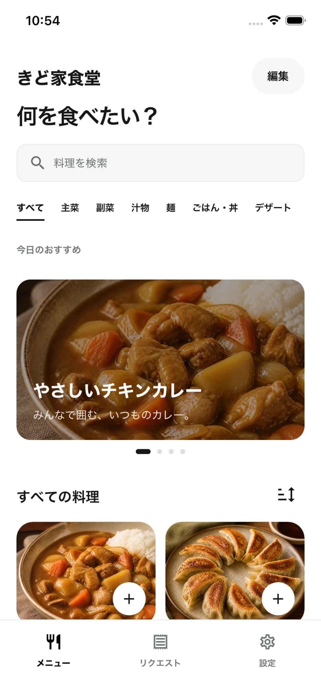

写真で見つける
家族の定番料理を、写真中心のメニューから。カテゴリや検索で、今食べたい一皿に出会えます。
Ouchi Order
おうちオーダーは、家族だけの写真メニューから食べたい料理を選び、好きなタイミングでリクエストできるアプリです。
iOS版を準備中

Our dining room
家族の食卓を、いつでも開ける
自分たちだけのレストランに。
How it works
家族の定番料理を、写真中心のメニューから。カテゴリや検索で、今食べたい一皿に出会えます。
今日、明日、週末、いつでも。人数やひとことを添えて、思いついたときに家族へ伝えられます。
料理する人の受付から、できあがりまでを共有。離れた時間にいる家族の気持ちが、食卓でつながります。
Made for family
その場で献立会議をしなくても、食べたい人は自分のタイミングで伝えられます。料理する人は、できるときに受け付ける。家族それぞれの時間を大切にした仕組みです。
Inside the app
掲載画面は、iPhone Simulatorで撮影した実際の開発版アプリです。
Family private
メニュー、リクエスト、家族のプロフィールは、参加している家族の単位で管理します。写真は表示に必要なサイズへ整え、アクセスできる範囲を限定して扱います。
データの取り扱いを詳しく見るComing to iOS
おうちオーダーは、iOS版の公開に向けて準備中です。